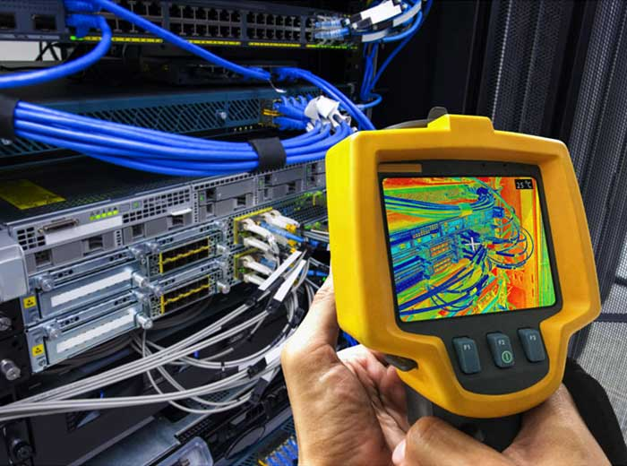

Connectivity Infrastructure
Wireline Projects
Building the backbone of modern communication. We deploy and maintain high-speed physical infrastructure to support the evolving bandwidth demands of businesses and communities.

Infrastructure Deployment
- Fibre-Optic Rollouts: End-to-end deployment of high-capacity fibre networks for residential and commercial scale.
- Network Modernisation: Upgrading legacy copper infrastructure to high-performance digital standards.
- Scalable Connectivity: Engineering robust solutions designed to handle increasing regional bandwidth demands.
Operational Excellence
- Network Maintenance: Proactive servicing and rapid repair of physical cable infrastructure.
- Digital Transformation: Enabling seamless connectivity to support modern business digital requirements.
- Standardised Quality: Rigorous adherence to industry safety and performance benchmarks across all builds.